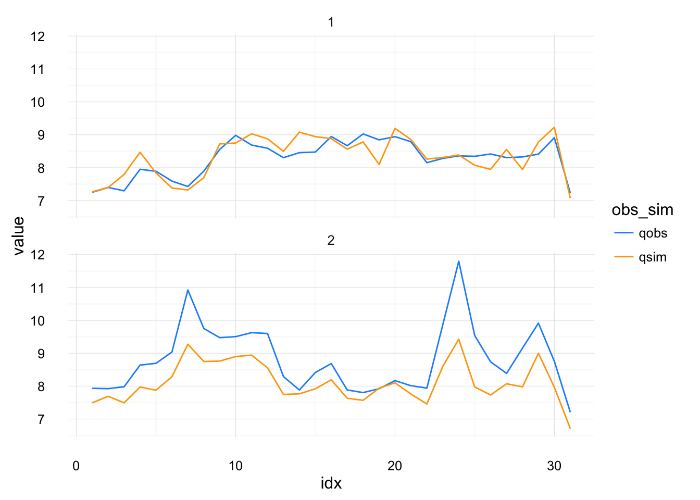
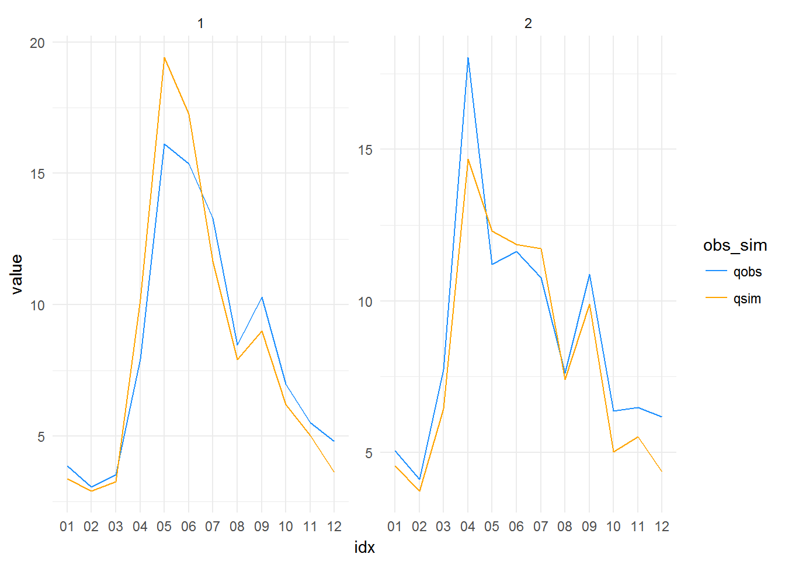
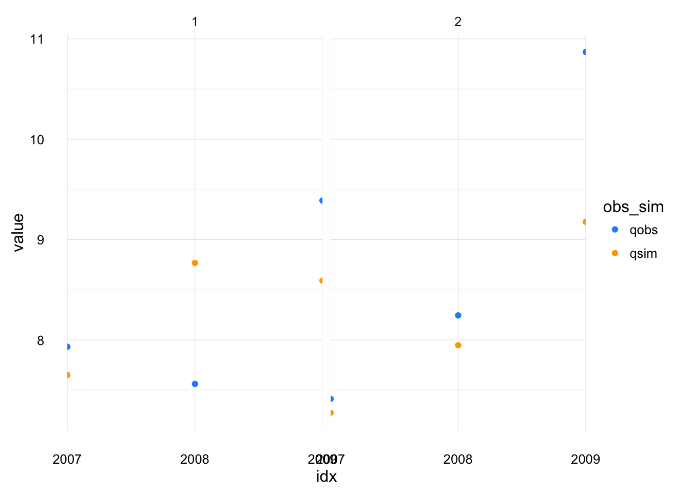

Chapter 4 Objective Functions
This chapter presents the objective function summary functions in visCOS. They compute basin-wise objective functions of the overall data and for the individual basins.
As explained in previous section objective functions are a pivotal part of model calibration. If no specific options are chosen visCOS uses 4 objective functions, i.e.: \(NSE\), \(KGE\), Pearson’s Correlation and the Percentage Bias (the function definitions have been given in the chapter about distance metrics).
The objective functions for the overall data and the marked periods can be computed through the function judge_compute. Additionally, visCOS already provides two different options to create plots for the main objective functions: judge_rasterplot and judge_barplot. Both functions create a list with ggplot figures. Each entry in the list corresponds to one of the main objective functions and both lists can be saved to html embedded pictures with the serve function.
The judge function provides a wrapper for all other judge_ and of_ functions. The selection is done via the non-standardly-evaluated type argument (search for lazy-evaluation if you want to know more. This implies, among other things, that
In the following are some examples:
Example 1. Computing the main objective functions
library(magrittr)
library(coscos)
library(visCOS)
#
viscos_example( ) %>%
judge(.) %>%
print(.)## # A tibble: 12 × 3
## of basin_1 basin_2
## * <chr> <dbl> <dbl>
## 1 nse 0.5177309 0.8012919
## 2 kge 0.7246877 0.7489862
## 3 pbias 0.2506191 -12.5298276
## 4 corr 0.8177663 0.9107391
## 5 corr_period.1 0.8243198 0.8806770
## 6 corr_period.2 0.8577983 0.9385221
## 7 kge_period.1 0.4138710 0.8487406
## 8 kge_period.2 0.8419666 0.6820128
## 9 nse_period.1 0.1326604 0.7566200
## 10 nse_period.2 0.7096110 0.8168895
## 11 pbias_period.1 8.8238223 -8.6127526
## 12 pbias_period.2 -6.8569950 -15.9030884Example 2. Plotting the results of main objective function with bar plots:
viscos_example() %>%
judge(.,barplot) %>%
.[[1]] %>%
plot(.)
Example 3. Plotting the results of main objective function with a raster:
viscos_example() %>%
judge(.,rasterplot) %>%
.[[2]] %>%
plot(.)
Example 4. Using the judge_ functionality:
viscos_example() %>%
judge_barplot(.) %>%
.[[1]] %>%
plot(.)
4.1 Code
# ---------------------------------------------------------------------------
# Code for the Main Objective Functions (main_of)
# authors: Daniel Klotz, Johannes Wesemann, Mathew Herrnegger
# !!!!!!!!!!!!!!!!!!!!!!!!!!!!!!!!!!!!!!!!!!!!!!!!!!!!!!!!!!!!!!!!!!!!!!!!!!!4.1.1 Wrapper
#' Wrapper for the different of functions
#'
#' This function provides a wrapper for all `judge_` functions. The
#' input arguments `type` is lazyily-evaluated (which basically implies that
#' it does not have to be provided as a character argument).
#' which function is chosen (the "pre fix" part of
#' the selected functions, i.e. `judge_` and `of_`, do not need to be provided).
#' Th
#'
#' @import pasta
#' @import lazyeval
#'
#' @rdname judge
#' @export
judge <- function(cosdata,
type = "compute",
.ofuns = list(nse = coscos::of_nse,
kge = coscos::of_kge,
pbias = coscos::of_pbias,
corr = coscos::of_cor),
opts = coscos::viscos_options(),
...
) {
# lazy evaluation: ------------------------------------------------------
le_dots <- match.call(expand.dots = FALSE) %>%
.["..."] %>%
.[[1]]
le_type <- match.call(expand.dots = FALSE) %>%
.["type"] %>%
.[[1]] %>%
as.character(.)
if (length(le_type) == 0) {
le_type = "compute"
}
if (class(le_type) != "character") {
stop("Cannot resolve 'type' argument. Try to provide a character.")
}
# compute options: ------------------------------------------------------
if (le_type == "compute") {
judge_compute(cosdata, .ofuns)
} else if (le_type == "judge_barplot" | le_type == "barplot") {
judge_barplot(cosdata, .ofuns)
} else if (le_type == "judge_rasterplot" | le_type == "rasterplot") {
judge_rasterplot(cosdata, .ofuns)
} else if (le_type == "judge_explore" | le_type == "explore") {
judge_explore(cosdata, .ofuns)
} else if (le_type == "judge_explore" | le_type == "compare") {
cosdata2 <- NULL
if ("cosdata2" %in% names(le_dots)) {2 <- eval(le_dots$cosdata2)}
judge_compare(cosdata, cosdata2, .ofuns)
} else if (le_type == "judge_window" | le_type == "window") {
windows <- c(20L,500L)
if (window_sizes %in% names(le_dots)) {windows <- window_sizes}
judge_window(cosdata, .ofuns, window_sizes)
} else {
stop("There is no option (`type`) called" %&&% le_type)
}
}4.1.2 Computation
The purpose of this function is to compute a set of objective functions for cosdata.
# ---------------------------------------------------------------------------
#' Get basic objective function for
#'
#' Calculate basic objective functions(NSE, KGE, percentage BIAS, Correlation)
#' for every basin and the chosen periods.
#'
#' @param cosdata cosdata data.frame.
#' @return list of basic objective function evaluated for the different
#' hydrological years and over the whole timespan.
#'
#' @import pasta
#' @import tibble
#' @importFrom purrr map_df
#' @importFrom dplyr select filter starts_with
#' @importFrom magrittr set_names
judge_compute <- function(cosdata,
.ofuns = list(nse = coscos::of_nse,
kge = coscos::of_kge,
pbias = coscos::of_pbias,
corr = coscos::of_cor),
opts = coscos::viscos_options()
) {
# pre: ====================================================================
cos_data <- coscos::cook_cosdata(cosdata)
name_period <- opts[["name_COSperiod"]]
name_o <- opts[["name_o"]]
name_s <- opts[["name_s"]]
#
if( !(class(.ofuns) == "list") ) {
.ofuns <- list(.ofuns)
}
if (is.null(names(.ofuns))){
d_names <- "d" %&% 1:length(.ofuns)
} else {
d_names <- names(.ofuns)
}
#
evaluation_data <- cos_data[cos_data[[name_period]] > 0, ]
number_judge_basins <- evaluation_data %>%
names(.) %>%
unique(.) %>%
grepl(name_o, ., ignore.case = TRUE) %>%
sum(.)
data_periods <- evaluation_data %>%
.[[name_period]] %>%
unique(.)
number_judge_periods <- data_periods %>% length
# compute main-of for entire data: ========================================
d_mean <- purrr::map_df(.ofuns, function(judge_, x, y) as.numeric(judge_(x,y)),
x = dplyr::select(evaluation_data,dplyr::starts_with(name_o)) %>% unname(.),
y = dplyr::select(evaluation_data,dplyr::starts_with(name_s)) %>% unname(.) ) %>%
t(.) %>%
as_tibble(.) %>%
magrittr::set_names(., "basin" %_% 1:number_judge_basins) %>%
cbind.data.frame(of = d_names,.)
# compute periodwise main-of: =============================================
period_compute <- function(k) {
o_pick <- dplyr::filter(evaluation_data,period == data_periods[k]) %>%
dplyr::select(.,starts_with(name_o)) %>%
unname(.)
s_pick <- dplyr::filter(evaluation_data,period == data_periods[k]) %>%
dplyr::select(.,starts_with(name_s)) %>%
unname(.)
d_measures <- purrr::map_df(.ofuns, function(judge_,x,y) as.numeric(judge_(x,y)),
x = o_pick,
y = s_pick ) %>% t()
return(measure = d_measures)
}
d_names_periods <- d_names %_% "period" %.% rep(1:number_judge_periods, each = length(d_names))
d_periods <- lapply(1:number_judge_periods, period_compute) %>%
do.call(rbind,.) %>%
as_tibble(.) %>%
magrittr::set_names("basin" %_% 1:number_judge_basins) %>%
cbind(of = d_names_periods,.) %>%
.[order(.$of), ]
#
judge_all <- rbind(d_mean,d_periods) %>%
as_tibble(.)
judge_all$of <- as.character(judge_all$of)
return(judge_all)
}4.1.3 Bar Plots
# ---------------------------------------------------------------------------
#' Bar plot for the Main Objective Function Values
#'
#' @rdname judge_overview
#'
#' @export
judge_barplot <- function(cosdata,
.ofuns = list(nse = coscos::of_nse,
kge = coscos::of_kge,
pbias = coscos::of_pbias,
corr = coscos::of_cor)
) {
# pre: ====================================================================
cos_data <- coscos::cook_cosdata(cosdata)
if(!(class(.ofuns) == "list")) {
.ofuns <- list(.ofuns)
}
if (is.null(names(.ofuns))){
d_names <- "d" %&% 1:length(.ofuns)
} else {
d_names <- names(.ofuns)
}
# functions: ==============================================================
assign_ofgroups <- function(judge_melted,judge_names) {
judge_string <- as.character(judge_melted$of)
judge_melted$judge_group <- judge_string %>%
replace(., startsWith(judge_string,judge_names[1]), judge_names[1]) %>%
replace(., startsWith(judge_string,judge_names[2]), judge_names[2]) %>%
replace(., startsWith(judge_string,judge_names[3]), judge_names[3]) %>%
replace(., startsWith(judge_string,judge_names[4]), judge_names[4])
return(judge_melted)
}
# plot-list function:
barplot_fun <- function(judge_name,judge_melted) {
judge_to_plot <- judge_melted %>% filter( judge_group == judge_name)
# bad solution, but will be fine for now?
if (judge_name == "pbias") {
gglimits <- c(-viscos_options("of_limits")[2]*100,
viscos_options("of_limits")[2]*100)
} else {
gglimits <- viscos_options("of_limits")
}
plt_out <- ggplot(data = judge_to_plot) +
geom_bar(stat = "identity",
position = "identity",
aes(x = of, y = value, fill = value)) +
facet_wrap(~ variable, ncol = 1) +
ggtitle(judge_name) +
ylim(gglimits)
return(plt_out)
}
# computations: ===========================================================
judge_data <- judge_compute(cos_data,.ofuns)
num_basins <- ncol(judge_data) - 1
judge_melted <- suppressMessages( reshape2::melt(judge_data) ) %>%
assign_ofgroups(.,d_names)
# plotting ================================================================
plot_list <- lapply(d_names, function(x) barplot_fun(x,judge_melted)) %>%
magrittr::set_names(d_names)
return(plot_list)
}4.1.4 Raster Plots
#' Bar plot for the Main Objective Function Values
#'
#' @rdname judge_overview
#' @import pasta
#' @export
judge_rasterplot <- function(cosdata,
.ofuns = list(nse = coscos::of_nse,
kge = coscos::of_kge,
pbias = coscos::of_pbias,
corr = coscos::of_cor)
) {
# def: ====================================================================
cos_data <- coscos::cook_cosdata(cosdata)
if(!(class(.ofuns) == "list")) {
.ofuns <- list(.ofuns)
}
if (is.null(names(.ofuns))){
d_names <- "d" %&% 1:length(.ofuns)
} else {
d_names <- names(.ofuns)
}
# computations: ===========================================================
regex_main_of <- d_names %.% "*"
judge_data <- judge_compute(cos_data, .ofuns)
#
plot_list <- lapply(regex_main_of,function(x) plot_fun_raster(x,judge_data)) %>%
magrittr::set_names(d_names)
return(plot_list)
}
# plot function -------------------------------------------------------------
plot_fun_raster <- function(regex_single_of,judge_data) {
# function definitions ====================================================
extract_single_of <- function(judge_data){
idx <- grep(regex_single_of,judge_data$of)
return(judge_data[idx, ])
}
add_facet_info <- function(judge_data) {
facet_column <- nrow(judge_data) %>%
magrittr::subtract(1) %>%
rep("period",.) %>%
c("overall",.)
return( cbind(judge_data,facets = facet_column) )
}
reverse_basin_levels <- function(prepared_data) {
prepared_data$variable <- factor(prepared_data$variable,
levels = prepared_data$variable %>%
levels() %>%
rev()
)
return(prepared_data)
}
reverse_facetting_levels <- function(prepared_data) {
prepared_data$facets <- factor(prepared_data$facets,
levels = prepared_data$facets %>%
levels() %>%
rev()
)
return(prepared_data)
}
bind_and_round_value <- function(of,gglimits,digits) {
dplyr::mutate(of,
value = pmax(value,gglimits[1]) %>%
pmin(.,gglimits[2]) %>%
round(.,digits)
)
}
# computation =============================================================
if (regex_single_of == "p_bias.*") {
# pbias has different limits :(
gglimits <- c(-viscos_options("of_limits")[2]*100,
viscos_options("of_limits")[2]*100)
} else {
gglimits <- viscos_options("of_limits")
}
#
prepared_data <- judge_data %>%
extract_single_of() %>%
add_facet_info() %>%
reshape2::melt(., id.vars = c("of","facets")) %>%
reverse_basin_levels() %>%
reverse_facetting_levels() %>%
bind_and_round_value(.,gglimits,2)
# ggplot ==================================================================
plt_out <- ggplot(prepared_data,
aes(of,variable, fill = value),
environmnet = environment()) +
geom_raster(position = "identity") +
coord_fixed(ratio = 5) +
facet_grid(~ facets, scales = "free_x", space = "free") +
theme( legend.position = "none") +
geom_tile(color = "white", size = 0.25 ) +
geom_text(aes(of,variable, label = as.character(sprintf("%0.2f",value,2))),
color = "black")
return(plt_out)
}